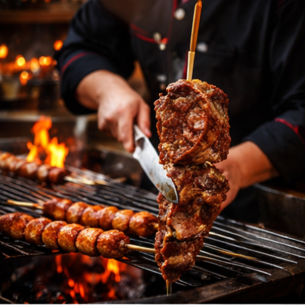
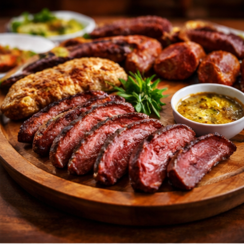
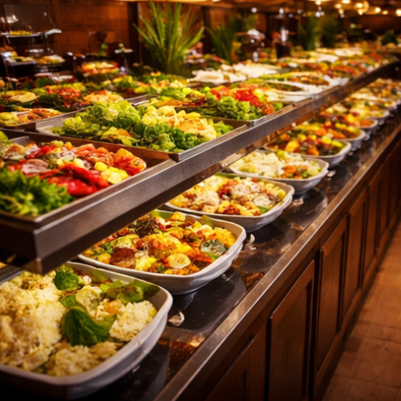
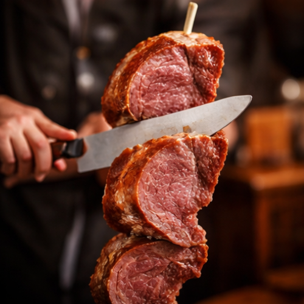
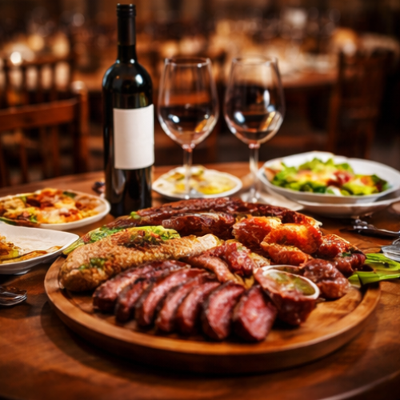
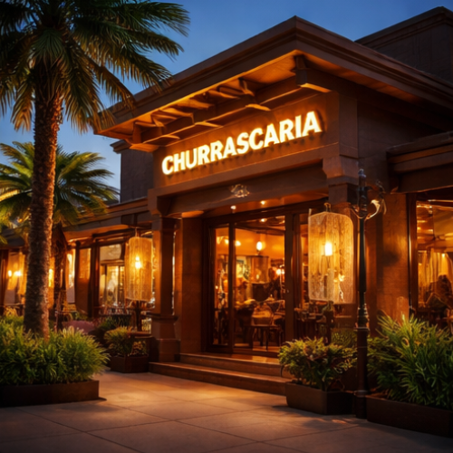

Carnes Selecionadas e Sempre Suculentas
Trabalhamos com cortes de alta qualidade, preparados no ponto certo e servidos quentinhos direto na mesa, garantindo sabor e maciez incomparáveis.
A churrascaria Sabor Gaúcho é o lugar ideal para quem ama carne de qualidade, bom atendimento e um ambiente acolhedor. Inspirada na tradição do churrasco do sul do Brasil, a casa oferece cortes selecionados preparados no fogo de brasa, garantindo sabor marcante e suculência em cada pedaço.
Venha Conhecer





Trabalhamos com cortes de alta qualidade, preparados no ponto certo e servidos quentinhos direto na mesa, garantindo sabor e maciez incomparáveis.
Além do rodízio de carnes, oferecemos um buffet com saladas frescas, pratos quentes, acompanhamentos e sobremesas deliciosas — opções para todos os gostos.
Espaço amplo, agradável e ideal para reunir família e amigos em almoços, aniversários ou comemorações especiais.